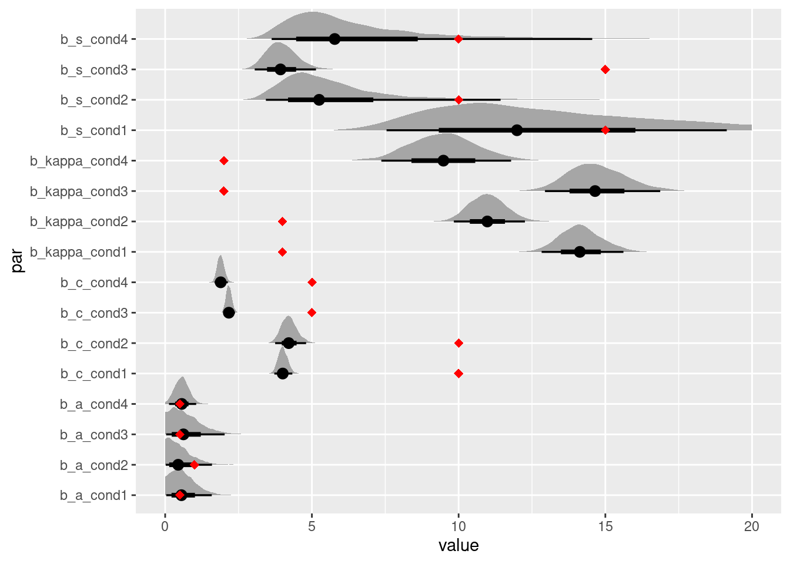

1 Introduction to the model
The Interference Measurement Model (IMM) is a measurement model for continous reproduction tasks in the domain of visual working memory. The model was introduced by Oberauer et al. (2017) . The aim of the IMM is to capture the response behavior in continuous reproduction tasks including the occurrence of swap errors to other items encoded in visual working memory.
The IMM assumes that during retrieval, to-be-remembered items or features (e.g., colors, orientations, or shapes) are associated with the context they appeared in (e.g. the spatial location). These associations can be continuous in their strength and represent bindings between the contents and context of to-be-remembered information (see Figure 1 of Oberauer et al. (2017)). At retrieval there are different sources of activation that contribute to the activation of the to-be-retrieved contents. Background noise (b) uniformly activates all possible responses, for example all 360 colors that participants can chose from in a color wheel experiment. Cue-independent activation (a) equally activates all features that were encoded into visual working memory during retrieval. And cue-dependent activation (c) activates the features that are associated with the current retrieval cue (e.g., the spatial location cued to be retrieved). Additionally, the IMM assumes that cue-dependent activation follows a generalization gradient (s) that activates similar contexts.
The activation for each potential feature \(x\) that could be retrieved is the sum of the weighted activation from all three activation sources, given a retrieval cue \(L\) at the location \(\theta\):
\[ A(x|L_\theta) = b \times A_b(x) + a \times A_a(x) + c \times A_c(c|L_\theta) \]
The background activation (\(A_b\)) is independent from all encoded features and thus modeled as a uniform distribution around the circular feature space. This is implemented as a von-Mises (vM) distribution centered on 0 with a precision \(\kappa = 0\):
\[ A_b(x) = vM(x,0,0) \]
The cue-independent activation (\(A_a\)) is modeled as the sum of von Mises distributions centered on the feature values \(x_i\) of all \(n\) encoded items \(i\) with the precision of memory :
\[ A_a(x) = \sum^n_{i = 1} vM(x,x_i,\kappa) \]
The cue-dependent activation (\(A_c\)) is again modeled as the sum of von Mises distributions centered on the feature values \(x_i\) of all \(n\) encoded items \(i\) with the precision of memory . These distributions are weighted by the spatial distance \(D\) between the context \(L\) a feature was associated with to the cue context \(L_\theta\). This distance is weighted by the generalization gradient \(s\) that captures the specificity of bindings to the cue dimension:
\[ A_c(x|L_\theta) = \sum^n_{i = 1} e^{-s*D(L,L\theta)} \times vM(x,x_i,\kappa) \]
The probability for choosing each response \(\hat{x}\) then results from normalizing the activation for all possible responses \(N\). In the original publication of the IMM this was done using Luce’s choice rule:
\[ P(\hat{x}|L_\theta) = \frac{A(\hat{x}|L_\theta)}{\sum^N_{j=1}A(j|L_\theta)} \]
In the bmm package, we decided to implement an alternative normalization using the softmax normalization:
\[ P(\hat{x}|L_\theta) = \frac{e^{A(\hat{x}|L_\theta)}}{\sum^N_{j=1}e^{A(j|L_\theta)}} \]
A comparison between these different normalization function in the context of activation based models of working memory can be found in the appendix of Oberauer and Lewandowsky (2019). Additionally, a more recent factorial comparison of different models for visual working memory Oberauer (2023) indicated that the softmax normalization generally captures the observed data better than Luce’s choice rule in the context of continuous reproduction tasks.
In sum, the IMM assumes that responses in continuous reproduction tasks are the results of cue-based retrieval and cue-independent activation of all features corrupted by background noise.
2 Parametrization in the bmm package
For identification, one of the weighting parameters has to be fixed. In the original publication the strenght of cue-dependent activation \(c\) was fixed to one. The default setup of brms however currently only allows to fix the strength of the background noise \(b\) to zero. Therefore, in all implementations of the IMM in the bmm package, the strength of cue-dependent and cue-independent activation, \(c\) and \(a\), can be estimated and predicted by independent variables.
Apart from that, both the precision of memory representations \(\kappa\) and the generalization gradient \(s\) are parameterized the same way as in the original publication.
Additionally, because we use the softmax normalization for translating activation into probabilities, the estimates for the strenght of cue-dependent and -independent activation, \(c\) and \(a\) have to be interpreted relatively to the strength of the baseline activation \(b\) that is fixed to zero. Thus, it is possible that the strength of cue-dependent and cue-independent activation, \(c\) and \(a\), become negative. This does not reflect an absolute negative activation but rather an activation that is relatively smaller than the baseline activation.
3 Fitting the model with bmm
You should start by loading the bmm package:
3.1 Generating simulated data
Should you already have a data set you want to fit, you can skip this section. Alternatively, you can use data provided with the package (add reference to data) or generate data using the random generation function provided in the bmm package.
# set seed for reproducibility
set.seed(123)
# specfiy generating parameters
Cs <- c(4,4,2,2)
As <- c(0.5,1,0.5,0.5)
Ss <- c(10,10,5,5)
kappas <- c(15,10,15,10)
nTrials = 1000
setsize = 5
simData <- data.frame()
for (i in 1:length(Cs)) {
# generate different non-target locations for each condition
item_location <- c(0, runif(setsize - 1, -pi,pi))
# generate different distances for each condition
item_distance <- c(0, runif(setsize - 1, min = 0.1, max = pi))
# simulate data for each condition
genData <- rIMM(n = nTrials,
mu = item_location,
dist = item_distance,
c = Cs[i], a = As[i],
b = 0, s = Ss[i], kappa = kappas[i])
condData <- data.frame(
respErr = genData,
trialID = 1:nTrials,
cond = i,
color_item1 = 0,
dist_item1 = 0
)
init_colnames <- colnames(condData)
for (j in 1:(setsize - 1)) {
condData <- cbind(condData,item_location[j + 1])
condData <- cbind(condData,item_distance[j + 1])
}
colnames(condData) <- c(init_colnames,
paste0(rep(c("color_item","dist_item"),times = setsize - 1),
rep(2:(setsize),each = 2)))
simData <- rbind(simData,condData)
}
# convert condition variable to a factor
simData$cond <- as.factor(simData$cond)
3.2 Estimating the model with bmm
To estimate the IMM we first need to specify a formula. In this formula, we directly estimate all parameters for each of the four conditions:
model_formula <- brms::bf(respErr ~ 1,
c ~ 0 + cond,
a ~ 0 + cond,
s ~ 0 + cond,
kappa ~ 0 + cond)Then, we can specify the model that we want to estimate:
model <- IMMfull(non_target = paste0("color_item",2:setsize),
setsize = setsize,
spaPos = paste0("dist_item",2:setsize))Finally, we can fit the model by passing all the relevant arguments to the fit_model function:
fit <- fit_model(
formula = model_formula,
data = simData,
model = model,
parallel = TRUE,
chains = 4,
iter = 2000,
backend = "cmdstanr"
)Running this model takes about 2 to 5 minutes (depending on the speed of your computer). Here we load an already saved fit object, but on your machine you will have to wait until the model finishes sampling. Both brms and cmdstanr typically print out some information on the sampling progress.
fit <- readRDS(system.file("imm_vignette_fit.rds", package='bmm'))Using this fit object we can have a quick look at the summary of the fitted model:
summary(fit)
#> Family: mixture(von_mises, von_mises, von_mises, von_mises, von_mises, von_mises)
#> Links: mu1 = identity; kappa1 = log; mu2 = identity; kappa2 = log; mu3 = identity; kappa3 = log; mu4 = identity; kappa4 = log; mu5 = identity; kappa5 = log; mu6 = identity; kappa6 = log; theta1 = identity; theta2 = identity; theta3 = identity; theta4 = identity; theta5 = identity; theta6 = identity
#> Formula: respErr ~ 1
#> c ~ 0 + cond
#> a ~ 0 + cond
#> s ~ 0 + cond
#> kappa ~ 0 + cond
#> mu1 ~ 1
#> kappa6 ~ 1
#> mu6 ~ 1
#> theta1 ~ c + a
#> kappa1 ~ kappa
#> expS ~ exp(s)
#> kappa2 ~ kappa
#> theta2 ~ LureIdx1 * (exp(-expS * dist_item2) * c + a) + (1 - LureIdx1) * (-100)
#> mu2 ~ color_item2
#> kappa3 ~ kappa
#> theta3 ~ LureIdx2 * (exp(-expS * dist_item3) * c + a) + (1 - LureIdx2) * (-100)
#> mu3 ~ color_item3
#> kappa4 ~ kappa
#> theta4 ~ LureIdx3 * (exp(-expS * dist_item4) * c + a) + (1 - LureIdx3) * (-100)
#> mu4 ~ color_item4
#> kappa5 ~ kappa
#> theta5 ~ LureIdx4 * (exp(-expS * dist_item5) * c + a) + (1 - LureIdx4) * (-100)
#> mu5 ~ color_item5
#> Data: .x2 (Number of observations: 4000)
#> Draws: 4 chains, each with iter = 2000; warmup = 1000; thin = 1;
#> total post-warmup draws = 4000
#>
#> Population-Level Effects:
#> Estimate Est.Error l-95% CI u-95% CI Rhat Bulk_ESS Tail_ESS
#> mu1_Intercept 0.00 0.00 0.00 0.00 NA NA NA
#> mu6_Intercept 0.00 0.00 0.00 0.00 NA NA NA
#> kappa6_Intercept -100.00 0.00 -100.00 -100.00 NA NA NA
#> c_cond1 4.01 0.16 3.71 4.34 1.00 4433 3135
#> c_cond2 4.23 0.26 3.78 4.80 1.00 3275 2418
#> c_cond3 2.17 0.10 1.99 2.39 1.00 3959 2885
#> c_cond4 1.90 0.12 1.68 2.16 1.00 4613 2873
#> a_cond1 0.48 0.52 -0.50 1.57 1.00 4147 3088
#> a_cond2 0.08 0.59 -1.00 1.30 1.00 3623 3212
#> a_cond3 0.54 0.63 -0.50 2.00 1.00 2360 2231
#> a_cond4 0.56 0.24 0.11 1.05 1.00 4694 2991
#> s_cond1 2.61 0.37 2.02 3.43 1.00 4119 2519
#> s_cond2 1.70 0.30 1.24 2.43 1.00 2806 1992
#> s_cond3 1.37 0.13 1.12 1.64 1.00 4962 3184
#> s_cond4 1.85 0.41 1.27 2.86 1.00 3393 2512
#> kappa_cond1 2.65 0.05 2.55 2.75 1.00 6247 2861
#> kappa_cond2 2.40 0.06 2.29 2.50 1.00 4482 3029
#> kappa_cond3 2.69 0.07 2.56 2.82 1.00 4157 3303
#> kappa_cond4 2.25 0.12 1.98 2.46 1.00 4618 2991
#>
#> Draws were sampled using sample(hmc). For each parameter, Bulk_ESS
#> and Tail_ESS are effective sample size measures, and Rhat is the potential
#> scale reduction factor on split chains (at convergence, Rhat = 1).The first thing you might notice is that below the parts of the formula that was passed to the fit_model function, bmm has added a lot of additional specifications to implement the IMM. This is nothing that you have to check. But if you are interested in customizing and exploring different assumptions imposed by the IMM, you could start by taking this formula and adapting it accordingly.
Next, we can have a look at the estimated parameters. The first thing we should check is if the sampling converged, this is indicated by all Rhat values being close to one. If you want to do more inspection of the sampling, you can check out the functionality implemented in brmsto do this.
The parameter estimates for c and a are already on their native scale, but both s and kappa are estimated using a log link function, so we have to transform these back to the native scale.
fixedFX <- brms::fixef(fit)
# print posterior means for the s parameter
fixedFX[startsWith(rownames(fixedFX),"c_"),]
#> Estimate Est.Error Q2.5 Q97.5
#> c_cond1 4.009065 0.16228718 3.712424 4.341776
#> c_cond2 4.230107 0.26159354 3.777040 4.802361
#> c_cond3 2.174946 0.09946977 1.987287 2.387866
#> c_cond4 1.897037 0.12056248 1.679840 2.159184
# print posterior means for the s parameter
fixedFX[startsWith(rownames(fixedFX),"a_"),]
#> Estimate Est.Error Q2.5 Q97.5
#> a_cond1 0.47987530 0.5208763 -0.5038172 1.569234
#> a_cond2 0.07818879 0.5888166 -1.0037167 1.304360
#> a_cond3 0.54412603 0.6330249 -0.5013562 1.995754
#> a_cond4 0.56442213 0.2387276 0.1109007 1.048604
# print posterior means for the s parameter
exp(fixedFX[grepl("s_",rownames(fixedFX)),])
#> Estimate Est.Error Q2.5 Q97.5
#> s_cond1 13.595806 1.449047 7.529412 30.886185
#> s_cond2 5.450170 1.351615 3.463338 11.318123
#> s_cond3 3.933775 1.140493 3.051862 5.168997
#> s_cond4 6.364689 1.501557 3.573037 17.415977
# print posterior means for the s parameter
exp(fixedFX[grepl("kappa_",rownames(fixedFX)),])
#> Estimate Est.Error Q2.5 Q97.5
#> kappa_cond1 14.142684 1.053534 12.762392 15.65602
#> kappa_cond2 10.978578 1.057474 9.857696 12.21859
#> kappa_cond3 14.684509 1.070786 12.896423 16.78497
#> kappa_cond4 9.470469 1.127680 7.275862 11.76137These results indicate that all parameters, except for s were well recovered. As already noted by Oberauer et al. (2017), a good recovery of the generalization gradient s requires a lot of data. Thus you might consider opting for the simplified version of the IMM without the s parameter, the IMMabc.
We can illustrate the recovery of the data generating parameters by plotting the full posterior distributions alongside the data generating parameters. For this we need to extract the posterior draws using the tidybayes package and include the data generating parameters into the plots of the posteriors.
library(tidybayes)
library(dplyr)
library(tidyr)
library(ggplot2)
# extract the posterior draws
draws <- tidybayes::tidy_draws(fit)
draws <- select(draws, starts_with("b_")) %>% select(-(1:3)) %>%
mutate_at(vars(starts_with("b_s")),exp) %>%
mutate_at(vars(starts_with("b_kappa")),exp)
# plot posterior with original parameters overlayed as diamonds
as.data.frame(draws) %>%
gather(par, value) %>%
ggplot(aes(value, par)) +
tidybayes::stat_halfeyeh(normalize = "groups") +
geom_point(data = data.frame(par = colnames(draws),
value = c(Cs,As,Ss,kappas)),
aes(value,par), color = "red",
shape = "diamond", size = 2.5) +
scale_x_continuous(lim=c(0,20))